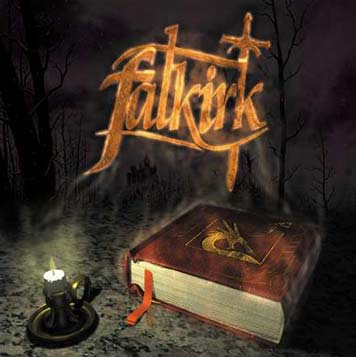

 |
- line-up -
Arnaud Bodin - guitar
Alexandre Bonvalot - guitar
Stéphane Fradet - vocals
Pascal Gilleront - bass
Laurent Robalo - drums
Originally recorded as a demo, finally released as an album.
Recorded by Didier Tillit
Mixed by Dider Tillit & FalkirK
at BMT Studios, Pré St Gervais FRANCE from November 8th - 15 th 1999
Remixed and mastered in May, the 28th - June 2nd 2000.
Additionnal tracks : Remixed and remastered by Dider Théry at Terrific Studios, Ivry/Seine FRANCE in June the 28th 2000.